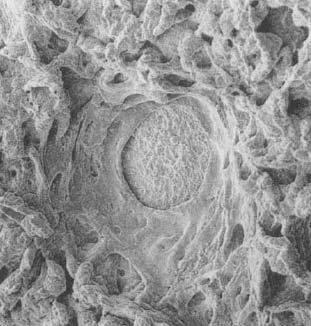

Not having enough food or water definitely counts as a stressor. If you’re a human, having enough food and water for this meal, but not being sure where the next meal is coming from is a major stressor as well, one of the defining experiences of life outside the westernized world. And choosing not to eat to the point of starvation—anorexia—is a stressor as well (and one with an odd endocrine signature, harking back to chapter 2, in that glucocorticoids tend to be elevated while the sympathetic nervous system is unexpectedly inhibited). None of this is surprising. Nor is it surprising that stress changes eating patterns. This is well established. The question, of course, is in what way.
Not having enough food or water definitely counts as a stressor. If you’re a human, having enough food and water for this meal, but not being sure where the next meal is coming from is a major stressor as well, one of the defining experiences of life outside the westernized world. And choosing not to eat to the point of starvation—anorexia—is a stressor as well (and one with an odd endocrine signature, harking back to chapter 2, in that glucocorticoids tend to be elevated while the sympathetic nervous system is unexpectedly inhibited). None of this is surprising. Nor is it surprising that stress changes eating patterns. This is well established. The question, of course, is in what way.
Stress and Food Consumption
From the previous chapter it’s perfectly obvious where we’re heading in terms of appetite. You’re the zebra running for your life, don’t think about lunch. That’s the reason why we lose our appetites when we’re stressed. Except for those of us who, when stressed, eat everything in sight, in a mindless mechanical way. And those who claim they’re not hungry, are too stressed to eat a thing, and just happen to nibble 3,000 calories’ worth of food a day. And those of us who really can’t eat a thing. Except for chocolate-chocolate chip hot fudge sundaes. With whipped cream and nuts. The official numbers are that stress makes about two-thirds of people hyperphagic (eating more) and the rest hypophagic.* Weirdly, when you stress lab rats, you get the same confusing picture, where some become hyperphagic, others hypophagic. So we can conclude with scientific certainty that stress can alter appetite. Which doesn’t teach us a whole lot, since it doesn’t tell us whether there’s an increase or decrease.
It turns out that there are ways to explain why some of us become hyper- and others hypophagic during stress. To start, we extend the zebra scenario to the point of it surviving its encounter. During the stressor, appetite and energy storage were suppressed, and stored energy was mobilized. Thus, what’s the logic during the post-stress period? Obvious—recover from that, reverse those processes. Block the energy mobilization, store the nutrients in your bloodstream, and get more of them. Appetite goes up.
This is accomplished through some endocrinology that is initially fairly confusing, but is actually really elegant. The confusing issue is that one of the critical hormones of the stress-response stimulates appetite, while another inhibits it. You might recall from earlier chapters that the hormone CRH is released by the hypothalamus and, by stimulating the pituitary to release ACTH, starts the cascade of events that culminates in adrenal release of glucocorticoids. Evolution has allowed the development of efficient use of the body’s chemical messengers, and CRH is no exception. It is also used in parts of the brain to regulate other features of the stress-response. It helps to turn on the sympathetic nervous system, and it plays a role in increasing vigilance and arousal during stress. It also suppresses appetite. (Unsuccessful dieters should be warned against running to the neighborhood pharmacist for a bottle of CRH. It will probably help you lose weight, but you’ll feel awful—as if you were always in the middle of an anxiety-provoking emergency: your heart racing; feeling jumpy, hyposexual, irritable. Probably better to just opt for a few more sit-ups.)
On the other side of the picture are glucocorticoids. In addition to the actions already outlined in response to stress, they appear to stimulate appetite. This is typically demonstrated in rats: glucocorticoids make these animals more willing to run mazes looking for food, more willing to press a lever for a food pellet, and so on. The hormone stimulates appetite in humans as well (although, to my knowledge, no one has stoked human volunteers on glucocorticoids and then quantified them scurrying up and down supermarket aisles). Scientists have a reasonably good idea where in the brain glucocorticoids stimulate appetite, which type of glucocorticoid receptors are involved, and so on.* What is really fascinating is that glucocorticoids don’t just stimulate appetite—they stimulate it preferentially for foods that are starchy, sugary, or full of fat—and we reach for the Oreos and not the celery sticks.
Thus, we appear to have a problem here. CRH inhibits appetite, glucocorticoids do the opposite.* Yet they are both hormones secreted during stress. Timing turns out to be critical. When a stressful event occurs, there is a burst of CRH secretion within a few seconds. ACTH levels take about fifteen seconds to go up, while it takes many minutes for glucocorticoid levels to surge in the bloodstream (depending on the species). Thus, CRH is the fastest wave of the adrenal cascade, glucocorticoids the slowest. This difference in time course is also seen in the speed at which these hormones work on various parts of the body. CRH makes its effects felt within seconds, while glucocorticoids take minutes to hours to exert their actions. Finally, when the stressful event is over, it takes mere seconds for CRH to be cleared from the bloodstream, while it can take hours for glucocorticoids to be cleared.
Therefore, if there are large amounts of CRH in your bloodstream, yet almost no glucocorticoids, it is a safe bet that you are in the first few minutes of a stressful event. Good time to turn off appetite, and the combination of high CRH and low glucocorticoids accomplishes that.
Next, if there are large amounts of CRH and glucocorticoids in the bloodstream, you are probably in the middle of a sustained stressor. Also a good time to have appetite suppressed. You can pull this off only if the appetite-suppressing effects of CRH are stronger than the appetite-stimulating effects of glucocorticoids. And that’s exactly how it works.
Finally, if there are substantial amounts of glucocorticoids in the circulation but little CRH, you have probably started the recovery period. That’s exactly when digestion starts up again and your body can begin to replenish those stores of energy consumed in that mad dash across the savanna. Appetite is stimulated. In chapter 4, we saw how glucocorticoids help to empty out the bank account of stored energy during a stressor. In this case, glucocorticoids would not so much serve as the mediator of the stress-response, but as the means of recovering from the stress-response.
Things now begin to make sense when you consider both the duration of a stressor and the recovery period combined. Suppose that something truly stressful occurs, and a maximal signal to secrete CRH, ACTH, and glucocorticoids is initiated. If the stressor ends after, say, ten minutes, there will cumulatively be perhaps a twelve-minute burst of CRH exposure (ten minutes during the stressor, plus the seconds it takes to clear the CRH afterward) and a two-hour burst of exposure to glucocorticoids (the roughly eight minutes of secretion during the stressor plus the much longer time to clear the glucocorticoids). So the period where glucocorticoid levels are high and those of CRH are low is much longer than the period of CRH levels being high. A situation that winds up stimulating appetite.
In contrast, suppose the stressor lasts for days, nonstop. In other words, days of elevated CRH and glucocorticoids, followed by a few hours of high glucocorticoids and low CRH, as the system recovers. The sort of setting where the most likely outcome is suppression of appetite.
The type of stressor is key to whether the net result is hyper- or hypophagia. Take some crazed, maze-running rat of a human. He sleeps through the alarm clock first thing in the morning, total panic. Calms down when it looks like the commute isn’t so bad today, maybe he won’t be late for work after all. Gets panicked all over again when the commute then turns awful. Calms down at work when it looks like the boss is away for the day and she didn’t notice he was late. Panics all over again when it becomes clear the boss is there and did notice. So it goes throughout the day. And how would that person describe his life? “I am like, SO stressed, like totally, nonstop stressed, 24/7.” But that’s not really like totally nonstop stressed. Take a whole body burn. That’s like totally nonstop stressed, 24/7. What this first person is actually experiencing is frequent intermittent stressors. And what’s going on hormonally in that scenario? Frequent bursts of CRH release throughout the day. As a result of the slow speed at which glucocorticoids are cleared from the circulation, elevated glucocorticoid levels are close to nonstop. Guess who’s going to be scarfing up Krispy Kremes all day at work?
So a big reason why most of us become hyperphagic during stress is our westernized human capacity to have intermittent psychological stressors throughout the day. The type of stressor is a big factor.
Another variable that helps predict hyperphagia or hypophagia during stress is how your body responds to a particular stressor. Put a bunch of subjects through the same experimental stressor (for example, a session on an exercise bicycle, a time-pressured set of math questions, or having to speak in public) and, not surprisingly, not everyone secretes the exact same amount of glucocorticoids. Furthermore, at the end of the stressor, everyone’s glucocorticoid levels don’t return to baseline at the same rate. The sources of these individual differences can be psychological—the experimental stressor may be an utter misery for one person and no big deal for another. Differences can also arise from physiology—one person’s liver may be pokier at breaking down glucocorticoids than the next person’s.
Elissa Epel of UCSF has shown that the glucocorticoid hypersecreters are the ones most likely to be hyperphagic after stress. Moreover, when given an array of foods to choose from during the post-stress period, they also atypically crave sweets. This is an effect that is specific to stress. The people who secrete excess glucocorticoids during stress don’t eat any more than the other subjects in the absence of stress, and their resting, non-stressed levels of glucocorticoids aren’t any higher than the others.
What else separates the stress hyperphagics from the stress hypophagics? Some of it has to do with your attitude toward eating. Lots of people eat not just out of nutritional need, but out of emotional need as well. These folks tend both to be overweight and to be stress-eaters. In addition, there’s a fascinating literature concerning the majority of us, for whom eating is a regulated, disciplined task. At any given point, about two-thirds of us are “restrained” eaters. These are people who are actively trying to diet, who would agree with statements like, “In a typical meal, I’m conscious of trying to restrict the amount of food that I consume.” Mind you, these are not people who are necessarily overweight. Plenty of heavy people are not dieting, plenty of everyone else is at any point. Restrained eaters are actively restricting their food intake. What the studies consistently show is that during stress, people who are normally restrained eaters are more likely than others to become hyperphagic.
This makes lots of sense. Things are a bit stressful—corporate thugs have looted your retirement savings, there’s anthrax in the mail, and you’ve realized that you hate how your hair looks. That’s exactly the time when most people decide that, as a coping device, as a means of being nice to themselves during a tough time, they need to ease up on something about which they’re normally pretty regimented. So if you normally force yourself to watch Masterpiece Theater instead of reality TV as some sort of gesture of self-improvement, on goes Survivor XII. And if it’s food intake that you’re normally regimented about, out come the fudge brownies.
Mark Daughhetee, The Sin of Gluttony, oil on silver print, 1985.
So we differ as to whether stress stimulates or inhibits our appetite, and this has something to do with the type and pattern of stressors, how reactive our glucocorticoid system is to stress, and whether eating is normally something that we keep a tight, superegoish lid on. It turns out that we also differ as to how readily we store food away after a stressor. And where in the body we store it.
Glucocorticoids not only increase appetite but, as an additional means to recover from the stress-response, also increase the storage of that ingested food. Mobilize all that energy during that mad dash across the savanna, and you’re going to have to do a lot of energy storage during your recovery period. In order to have this effect, glucocorticoids trigger fat cells to make an enyzme that breaks down the circulating nutrients into their storage forms, ideal for storing them for next winter.
It’s not just any fat cells that glucocorticoids stimulate. Time for one of the great dichotomies revered by fat cell aficionados: fat cells located in your abdominal area, around your belly, are known as “visceral” fat. Fill up those fat cells with fat, without depositing much fat elsewhere in your body, and you take on an “apple” shape.
In contrast, fat cells around your rear end form “gluteal” fat. Fill those up preferentially with fat and you take on a “pear” shape, being round-bottomed. The formal way to quantify these different types of fat deposition is to measure the circumference of your waist (which tells you about the amount of abdominal fat) and the circumference of your hips (a measure of gluteal fat). Apples have waists that are bigger than hips, producing a “waist-hip ratio” (WHR) that is bigger than 1.0, while pears have hips that are bigger than waists, producing a WHR that is less than 1.0.
It turns out that when glucocorticoids stimulate fat deposition, they do it preferentially in the abdomen, promoting apple-shaped obesity. This even occurs in monkeys. The pattern arises because abdominal fat cells are more sensitive to glucocorticoids than are gluteal fat cells; the former have more receptors that respond to glucocorticoids by activating those fat-storing enzymes. Furthermore, glucocorticoids only do this in the presence of high insulin levels. And once again, this makes sense. What does it mean if you have high glucocorticoid levels and low insulin levels in the bloodstream? As we know from chapter 4, you’re in the middle of a stressor. High glucocorticoids and high insulin? This happens during the recovery phase. Pack away those calories to recover from the grassland sprint.
This stimulation of visceral fat deposition by glucocorticoids is not good news. This is because if you have to pack on some fat, you definitely want to become a pear, not an apple. As we saw in the chapter on metabolism, lots of fat is a predictor for Syndrome X. But it turns out that a large WHR is an even better predictor of trouble than being overweight is. Take some extremely applish people and some very peary ones. Match them for weight, and it’s the apples who are at risk for metabolic and cardiovascular disease. Among other reasons, this is probably because fat released from abdominal fat cells more readily finds its way to the liver (in contrast to fat from gluteal fat stores, which gets dispersed more equally throughout the body), where it is converted into glucose, setting you up for elevated blood sugar and insulin resistance.
These findings lead to a simple prediction, namely that for the same stressor, if you tend to secrete more glucocorticoids than most, not only are you going to have a bigger appetite post-stressor, you’re going to go apple, preferentially socking away more of those calories in your abdominal fat cells. And that’s precisely what occurs. Epel has studied this in women and men across a range of ages, and she finds that a prolonged glucocorticoid response to novelty is a feature of applish people, not pears.
So with lots of stress, you get cravings for starchy comfort food and you pack it in the abdomen. One final distressing piece of information, based on some fascinating recent work by Mary Dallman from the University of California at San Francisco: consuming lots of those comfort foods and bulking up on abdominal fat are stress-reducers. They tend to decrease the size of the stress-response (both in terms of glucocorticoid secretion and sympathetic nervous system activity). Not only do the Oreos taste good, but by reducing the stress-response, they make you feel good as well.
There seems to be a huge number of routes by which obesity can occur—too much or too little of this or that hormone; too much or too little sensitivity to this or that hormone.* But another route appears to involve being the sort of person who secretes too many glucocorticoids, either because of too many stressors, too many perceived stressors, or trouble turning off the stress-response. And thanks to that weird new regulatory loop discovered by Dallman, it appears as if abdominal fat is one route for trying to tone down that overactive stress-response.
Bowel Movement
and Bowel Movements
Thanks to the preceding part of this chapter and to chapter 4, we’ve now sorted out how stress alters what you ingest, how it gets stored and mobilized. We have one last piece to fill in, which is getting food from your mouth to its digested form in your circulation. This is the purview of the gastrointestinal (GI) tract—your esophagus, stomach, small intestines and large intestines (also known as the colon or the bowel).
When it comes to your GI tract, there’s no such thing as a free lunch. You’ve just finished some feast, eaten like a hog—slabs of turkey, somebody’s grandma’s famous mashed potatoes and gravy, a bare minimum of vegetables to give a semblance of healthiness, and—oh, why not—another drumstick and some corn on the cob, a slice or two of pie for dessert, ad nauseam. You expect your gut to magically convert all that into a filtrate of nutrients in your bloodstream? It takes energy, huge amounts of it. Muscular work. Your stomach not only breaks down food chemically, it does so mechanically as well. It undergoes systolic contractions: the muscle walls contract violently on one side of your stomach, and hunks of food are flung against the far wall, breaking them down in a cauldron of acids and enzymes. Your small intestines do a snake dance of peristalsis (directional contraction), contracting the muscular walls at the top end in order to squeeze the food downstream in time for the next stretch of muscle to contract. After that, your bowels do the same, and you’re destined for the bathroom soon. Circular muscles called sphincters located at the beginning and end of each organ open and close, serving as locks to make sure that things don’t move to the next level in the system until the previous stage of digestion is complete, a process no less complicated than shuttling ships through the locks of the Panama Canal. At your mouth, stomach, and small intestines, water has to be poured into the system to keep everything in solution, to make sure that the sweet potato pie, or what’s left of it, doesn’t turn into a dry plug. By this time, the action has moved to your large intestines, which have to extract the water and return it to your bloodstream so that you don’t inadvertently excrete all that fluid and desiccate like a prune. All this takes energy, and we haven’t even considered jaw fatigue. All told, your run-of-the-mill mammals, including us, expend 10 to 20 percent of their energy on digestion.
So back to our by-now-familiar drama on the savanna: if you are that zebra being pursued by a lion, you can’t waste energy on your stomach walls doing a rumba. There isn’t time to get any nutritional benefits from digestion. And if you are that lion running after a meal, you haven’t just staggered up from some all-you-can-eat buffet.
Digestion is quickly shut down during stress. We all know the first step in that process. If you get nervous, you stop secreting saliva and your mouth gets dry. Your stomach grinds to a halt, contractions stop, enzymes and digestive acids are no longer secreted, your small intestines stop peristalsis, nothing is absorbed. The rest of your body even knows that the digestive tract has been shut down—as we saw two chapters ago, blood flow to your stomach and gut is decreased so that the blood-borne oxygen and glucose can be delivered elsewhere, where they’re needed. The parasympathetic nervous system, perfect for all that calm, vegetative physiology, normally mediates the actions of digestion. Along comes stress: turn off the parasympathetic, turn on the sympathetic, and forget about digestion.* End of stress; switch gears again, and the digestive process resumes.
As usual, this all makes wonderful sense for the zebra or the lion. And as usual, it is in the face of chronic stress that diseases emerge instead.
Bowels in an Uproar
Regardless of how stressful that board meeting or examination is, we’re not likely to soil our pants. Nevertheless, we are all aware of the tendency of immensely terrified people—for example, soldiers amid horrifying battle—to defecate spontaneously. (This reaction is consistent enough that in many states, prisoners are clothed in diapers before an execution.)
The logic as to why this occurs is similar to why we lose control of our bladders if we are very frightened, as described in chapter 3. Most of digestion is a strategy to get your mouth, stomach, bile ducts, and so forth to work together to break your food down into its constituent parts by the time it reaches the small intestines. The small intestines, in turn, are responsible for absorbing nutrients out of this mess and delivering them to the bloodstream. As is apparent to most of us, not much of what we eat is actually nutritious, and a large percentage of what we consume is left over after the small intestines pick through it. In the large intestines, the leftovers are converted to feces and eventually exit stage left.
Yet again, you sprint across the veld. All that stuff sitting in your large intestines, from which the nutritive potential has already been absorbed, is just dead weight. You have the choice of sprinting for your life with or without a couple of pounds of excess baggage in your bowels. Empty them.
The biology of this is quite well understood. The sympathetic nervous system is responsible. At the same time that it is sending a signal to your stomach to stop its contractions and to your small intestine to stop peristalsis, your sympathetic nervous system is actually stimulating muscular movement in your large intestine. Inject into a rat’s brain the chemicals that turn on the sympathetic nervous system, and suddenly the small intestine stops contracting and the large intestine starts contracting like crazy.
But why, to add insult to injury, is it so frequently diarrhea when you are truly frightened? Relatively large amounts of water are needed for digestion, to keep your food in solution as you break it down so that it will be easy to absorb into the circulation when digestion is done. As noted, a job of the large intestine is to get that water back, and that’s why your bowels have to be so long—the leftovers slowly inch their way through the large intestine, starting as a soupy gruel and ending up, ideally, as reasonably dry stool. Disaster strikes, run for your life, increase that large intestinal motility, and everything gets pushed through too fast for the water to be absorbed optimally. Diarrhea, simple as that.
Stress and Functional
Gastrointestinal Disorders
Broadly, there are two types of gastrointestinal disorders. In the first, you feel terrible, something isn’t working right, and the doctors find something wrong. These are “organic” GI disorders. A gaping hole in the wall of your stomach, in other words, a peptic ulcer, counts as there being something demonstrably wrong. We’ll consider ulcers shortly. Out-of-control inflammation of tissue throughout your GI tract, which is what inflammatory bowel disease is, also counts as demonstrably wrong. This disorder will be briefly touched on in chapter 8.
But suppose you feel terrible, something isn’t working right, and the docs can’t find a thing wrong. Congratulations, you now have a “functional” GI disorder. These are immensely sensitive to stress. And this is not just the touchy-feely psychologists saying this. Papers about stress and functional GI disorders are even published in tough-guy meat-and-potato scientific journals with names like Gut.
The most common functional GI disorder, which will be considered here, is irritable bowel syndrome (IBS), which involves abdominal pain (particularly just after a meal) that is relieved by defecating and symptoms such as diarrhea or constipation, passage of mucus, bloating, and abdominal distention. Despite physicians checking you from every which end, they can’t find anything wrong, which qualifies IBS as a functional disorder. IBS is among the most common of stress-sensitive disorders. Personally, all the major rites of passage in my life have been marked by pretty impressive cases of the runs a few days before—my bar mitzvah, going away to college, my doctoral defense, proposing marriage, my wedding. (Finally, here’s that confessional tone obligatory to successful books these days. Now if I can only name some Hollywood starlet with whom I’ve taken diuretics, this may become a bestseller.)
Carefully conducted studies show that major chronic stressors increase the risk of the first symptoms of IBS appearing, and worsen preexisting cases. This makes sense. As we saw, what stress does is increase the contractions in the colon, getting rid of that dead weight. And IBS—also known as “spastic colon”—involves the colon being too contractile, an excellent way of producing diarrhea. (It is not clear why lots of stress-induced contractions of the colon can lead to constipation. As a possible explanation, the stress-induced contractions in the colon are directional, which is to say, they push the contents of the colon from the small intestinal end to the anus. And if they do that a lot, things get accelerated, resulting in diarrhea. However, in one plausible scenario, with long enough periods of stress, the contractions begin to get disorganized, lose their directionality, so that not much of anything moves toward the anus).
So people with IBS are disproportionately likely to be experiencing a lot of stressors. But in addition, IBS can be a disorder of too much gastrointestinal sensitivity to stress. This can be shown in experimental situations, where a person with IBS is subjected to a controlled stressor (keeping her hand in ice water for a while, trying to make sense of two recorded conversations at once, participating in a pressured interview). Contractions in the colon increase in response to these stressors more in IBS patients than in control subjects.
Another connection between stress and IBS concerns pain. As we’ll see in chapter 9, stress can blunt the sort of pain you feel in your skin and skeletal muscles while increasing the sensitivity of internal organs like the intestines to pain (something called “visceral” pain). And that is the profile seen in IBS patients—less sensitivity to skin (“cutaneous”) pain, and more visceral pain. Even more support for the stress/IBS link is that people with IBS don’t typically have hypercontractility of their bowels when they are asleep. Gut spasticity is not something that’s going on all the time—only when the person is awake, amid the opportunities to be stressed.
What’s the physiology of this gut that is too contractile? As we saw earlier, the sympathetic nervous system is responsible for the increased large intestinal contractions during stress. And as would be expected, people with IBS have overactive sympathetic nervous systems (though it is less clear whether glucocorticoid levels are abnormal in IBS). And just to make the whole process worse, the pain of that gassy, distended, hypersensitive gut can stimulate sympathetic activation even further, making for a vicious circle.
So ongoing stress can be closely associated with IBS. Interestingly, traumatic stress early in life (abuse, for example) greatly increases the risk of IBS in adulthood. This implies that childhood trauma can leave an echo of vulnerability, a large intestine that is hyperreactive to stress, long afterward. Animal studies have shown that this occurs.
Despite these findings, there is a great deal of resistance to the link between stress and IBS (prompting some semi-irate letters to me from readers of earlier editions of this book). One reason for this is the linkage between IBS and certain personality types. In the cases of depression or anxiety, the connection is solid, but earlier linkages seem pretty suspect. These studies tended to focus on a lot of psychoanalytic gibberish (there, now I’ll get myself into trouble with that crowd)—some hoo-ha about the person being stuck in the anal stage of development, a regression to the period of toilet training where going to the bathroom gained great acclaim and, suddenly, diarrhea was a symbolic reach for parental approval. Or the approval of the doctor as a parental surrogate. Or something or other. I’m not sure how they factored in constipation, but I’m sure they did.
Few gastroenterologists take these ideas seriously anymore. However, in less scientific circles, some still cling to these views. It is easy to see how someone suffering from IBS, who has just managed to clear up the perception that they’re still having some potty-training issues, isn’t enthused about getting fingered for not dealing well with stress.
Another reason why the stress/IBS connection is often viewed with suspicion is because there have been many studies that have failed to find a link. Why should this be?
First, both the severity of IBS symptoms and the intensity of stressors that someone is experiencing tend to wax and wane over time, and detecting a link between two such fluctuating patterns takes some very fancy statistics. (Typically, a technique called time-series analysis, a subject four classes more advanced than the statistics that most biomedical scientists have sort of learned. When my wife had to do a time-series analysis as part of her doctoral research, it made me nervous just to have a textbook on the subject in the house.) Such waxing and waning of stress and of symptoms is particularly difficult to track because most studies are retrospective (they look at people who already have IBS and ask them to identify stressors in their past) rather than prospective (in which people who do not have a disease are followed to see if stress predicts who is going to get it). The problem here is that people are terribly inaccurate at recalling information about stressors and symptoms that are more than a few months old, a point we’re going to return to often in this book. Moreover, as was mentioned above, the sorts of stressors that can increase the risk of IBS can occur many years prior to the emergence of symptoms, making the link hard to detect even in prospective studies. Finally, “IBS” is probably a hodgepodge of diseases with multiple causes, and stress may be relevant to only some of them, and it takes some additional fancy statistics to detect those folks as a meaningful subset of the whole, instead of as just random noise in the data.
At later junctures in this book, we will see other supposed links between stress and some disease, and be in the same quandary—there definitely is a link in some patients, or clinical impressions strongly support a stress-disease link, yet hard-nosed studies fail to show the same thing. As we will see repeatedly, the trouble is that the supposedly hard-nosed studies are often asking a fairly unsophisticated, straightforward question: does stress cause the disease in the majority of sufferers? The far more sophisticated questions to ask are whether stress worsens preexisting disease, whether patterns of symptoms and of stressors fluctuate in parallel over time, and whether these links occur only in a subset of vulnerable individuals. When asked in those ways, the stress-disease link becomes far more solid.
Ulcers
At last we arrive at the medical problem that started the stress concept on the road to fame and fortune. An ulcer is a hole in the wall of an organ, and ulcers originating in the stomach or in the organs immediately bordering it are termed peptic ulcers. The ones within the stomach are called gastric ulcers; those a bit higher up than the stomach are esophageal, and those at the border of the stomach and the intestine are duodenal (the most common of peptic ulcers).

Photomicrograph of a stomach ulcer.
As will be recalled, peptic ulcers were among the trio of symptoms Selye noted more than sixty years ago when he exposed his rats to nonspecific unpleasantness. Since then, stomach ulcers have emerged as the disorder most recognized by the lay public as a stress-related disease: in this view, you have upsetting thoughts for a long period of time and holes appear in the walls of your stomach.
Most clinicians agree that there is a subtype of ulcers that forms relatively rapidly (sometimes over the course of days) in humans who are exposed to immensely stressful crises—hemorrhage, massive infection, trauma due to accident or surgery, burns over large parts of the body, and so on. Such “stress ulcers” can be life threatening in severe cases.
But where a lot of contention has appeared has been with the issue of gradually emerging ulcers. This used to be a realm where people, including physicians, would immediately think stress. But a revolution has dramatically changed thinking about ulcers.
That revolution came with the discovery in 1983 of a bacterium called Helicobacter pylori. This obscure microorganism was discovered by an obscure Australian pathologist named Robert Warren. He, in turn, interested an even more obscure younger colleague named Barry Marshall, who documented that this bacterium consistently turned up in biopsies of the stomachs of people with duodenal ulcers and stomach inflammation (gastritis). He theorized that it actually caused the inflammation and ulcers, announced this to the (gastroenterological) world at a conference, and was nearly laughed out of the room. Ulcers were caused by diet, genetics, stress—not bacteria. Everyone knew that. And besides, because the stomach is so incredibly acidic, owing to the hydrochloric acid in stomach juices, no bacteria could survive in there. People had known for years that the stomach was a sterile environment, and that any bacteria that might turn up were just due to contamination by some sloppy pathologist.
Marshall showed that the bacteria caused gastritis and ulcers in mice. That’s great, but mice work differently than humans, everyone said. So, in a heroic, soon-to-be-a-movie gesture, he swallowed some Helicobacter bilge and caused gastritis in himself. Still, they ignored Marshall. Eventually, some folks in the field got tired of hearing him go on about the damn bacteria at meetings, decided to do some experiments to prove him wrong, and found that he was absolutely right.
Helicobacter pylori turns out to be able to live in the acidic stomach environment, protecting itself by having a structure that is particularly acid-resistant and by wrapping itself in a coat of protective bicarbonate. And this bacterium probably has a lot to do with 85 to 100 percent of ulcers in Western populations (as well as with stomach cancer). Nearly 100 percent of people in the developing world are infected with Helicobacter—it is probably the most common chronic bacterial infection in humans. The bacteria infect cells in the lining of the stomach, causing gastritis, which somehow compromises the ability of those cells lining the duodenum to defend themselves against stomach acids. Boom, under the right conditions, you’ve got a hole in that duodenal wall.
Many of the details remain to be sorted out, but the greatest triumph for Marshall and Warren has been the demonstration that antimicrobial drugs, such as antibiotics, turn out to be the greatest things since sliced bread for dealing with duodenal ulcers—they are as good at getting rid of the ulcers as are antacids or antihistamine drugs (the main prior treatments) and, best of all, unlike the aftermath of other treatments, ulcers now stay away (or at least until the next Helicobacter infection).
Once everybody in the field got used to the idea of Marshall and Warren being carried around on sedan chairs for their discovery, they embraced Helicobacter with a vengeance. It makes perfect sense, given the contemporary desire of medicine to move toward hard-nosed, reductive models of disease, rather than that wimpy psychosomatic stuff. The Center for Disease Control sent out educational pamphlets to every physician in America, advising them to try to disabuse their patients of the obsolete notion that stress has anything to do with peptic ulcers. Clinicians celebrated at never having again to sit down with their ulcer patients, make some serious eye contact, and ask them how their lives were going. In what one pair of investigators has termed the “Helicobacterization” of stress research on ulcers, the number of papers on stress as a component of the ulcer story has plummeted. Don’t bother with this psychological stuff when we finally have gotten some real science here, complete with a bacterium that’s got its own Latin name.
The trouble is that one bacterium can’t be the whole story. For starters, up to 15 percent of duodenal ulcers form in people who aren’t infected with Helicobacter, or with any other known bacterium related to it. More damning, only about 10 percent of the people infected with the bacteria get ulcers. It’s got to be Helicobacter pylori plus something else. Sometimes, the something else is a lifestyle risk factor—alcohol, smoking, skipping breakfast habitually, taking a lot of nonsteroidal anti-inflammatory drugs like aspirin. Maybe the something else is a genetic tendency to secrete a lot of acid or to make only minimal amounts of mucus to protect stomach linings from the acid.
But one of the additional factors is stress. Study after study, even those carried out after the ascendancy of the bacteria, show that duodenal ulceration is more likely to occur in people who are anxious, depressed, or undergoing severe life stressors (imprisonment, war, natural disasters). An analysis of the entire literature shows that somewhere between 30 and 65 percent of peptic ulcers have psychosocial factors (i.e., stress) involved. The problem is that stress causes people to drink and smoke more. So maybe stress increases the risk of an ulcer merely by increasing the incidence of those lifestyle risk factors. But no—after you control for those variables, stress itself still causes a two- to threefold increase in the risk of an ulcer.
Helicobacter is relevant to ulcers, but it is only in the context of its interactions with these other factors, including stress. You can show this statistically if you study a zillion ulcer patients. Then, do a fancy mathematical analysis that takes into account bacterial load, lifestyle risk factors, and stress (something aptly called a multivariate analysis). You’ll observe that ulcers can arise if you only have a little bit of one of the factors (bacterial load, stress, or lifestyle risks), so long as you have a lot of one or two of the others. As an example of that, if you expose lab rats to psychological stressors, they get ulcers—but not if they live in a germ-free environment that lacks Helicobacter.
So how does stress exacerbate the process of ulcer formation? Some sixty years after Selye first noticed his rats’ ulcers, it is still not quite clear. There are some favorite scenarios, however.
Acid Rebound To understand this mechanism, we have to grapple with the grim reality of what bizarre things we are willing to eat and expect our stomachs to digest. The only way that the stomach is going to be able to handle some of this stuff is if it has powerful degradative weapons. The contractions certainly help, but the main weapon is the hydrochloric acid that pours into your stomach from the cells lining it. Hydrochloric acid is immensely acidic; all well and good, but it raises the obvious question of why your stomach is not itself digested by the digestive acids. Eat somebody else’s stomach and your stomach disintegrates it. How do your own stomach walls remain unscathed? Basically, your stomach has to spend a fortune protecting itself. It builds many layers of stomach wall and coats them with thick, soothing mucus that buffers the acid. In addition, bicarbonate is secreted into the stomach to neutralize the acid. This is a wonderful solution, and you happily go about digestion.
Along comes a stressful period that lasts months. Your body cuts down on its acid secretion—there are now frequent times when digestion is being inhibited. During this period, your stomach essentially decides to save itself some energy by cutting corners. It cuts back a bit on the constant thickening of the stomach walls, undersecretes mucus and bicarbonate, and pockets the difference. Why not? There isn’t much acid around during this stressful period anyway.
End of stressful period; you decide to celebrate by eating a large chocolate cake inscribed for the occasion, stimulate your parasympathetic nervous system, start secreting hydrochloric acid, and…your defenses are down. The walls have thinned, there isn’t as thick a protective mucous layer as there used to be, the bicarbonate is overwhelmed. A couple of repeated cycles of stress and rebound with a bacterial infection that is already compromising the defenses and you’ve got an ulcer.
Suppose you are in the middle of a very stressful period, and you worry that you are at risk for an ulcer. What’s the solution? You could make sure that you remain under stress every second for the rest of your life. You definitely will avoid ulcers caused by hydrochloric acid secretion, but of course you’ll die for a zillion other reasons. The paradox is that, in this scenario, ulcers are not formed so much during the stressor as during the recovery. This idea predicts that several periods of transient stress should be more ulcerative than one long, continuous period, and animal experiments have generally shown this to be the case.
Decreased Blood Flow As we know, in an emergency, you want to deliver as much blood as possible to the muscles that are exercising. In response to stress, your sympathetic nervous system diverts blood from the gut to more important places—remember the man with a gunshot wound in the stomach, whose guts would blanch from decreased blood flow every time he became angry or anxious. If your stressor is one that involves a dramatic decrease in blood flow to the gut (for example, following a hemorrhage), it begins to cause little infarcts—small strokes—in your stomach walls, because of lack of oxygen. You develop small lesions of necrotic (dead) tissue, which are the building blocks of ulcers.
This condition probably arises for at least two reasons. First, with decreased blood flow, less of the acid that accumulates is being flushed away. The second reason involves another paradoxical piece of biology. We all obviously need oxygen and would turn an unsightly blue without it. However, running your cells on oxygen can sometimes produce an odd, dangerous class of compounds called oxygen radicals. Normally, another group of compounds (free radical quenchers, or scavengers) dispose of these villains. There is some evidence, however, that during periods of chronic stress, when blood flow (and thus oxygen delivery) to the gut decreases, your stomach stops making the scavengers that protect you from the oxygen radicals. Fine for the period of stress (since the oxygen radicals are also in shorter supply); it’s a clever way to save energy during a crisis. At the end of stress, however, when blood flow chock-full of oxygen resumes and the normal amount of oxygen radicals is generated, the stomach has its oxidative pants down. Without sufficient scavengers, the oxygen radicals start killing cells in the stomach walls; couple that with cells already in trouble thanks to bacterial infection and you’ve got an ulcer. Note how similar this scenario is to the acid-rebound mechanism: in both cases, the damage occurs not during the period of stress but in its aftermath, and not so much because stress increases the size of an insult (for example, the amount of acid secreted or the amount of oxygen radicals produced), but because, during the stressful emergency, the gut scrimps on defenses against such insults.
Immune Suppression Helicobacter as a bacterium triggers your immune system into trying to defend against it.* As you will soon learn in sickening detail (chapter 8), chronic stress suppresses immunity, and in this scenario, lowered immune defenses equals more Helicobacters reproducing happily.
Insufficient Amounts of Prostaglandins In this scenario, micro-ulcers begin now and then in your gut, as part of the expected wear and tear on the system. Normally your body can repair the damage by secreting a class of chemicals called prostaglandins, thought to aid the healing process by increasing blood flow through the stomach walls. During stress, however, the synthesis of these prostaglandins is inhibited by the actions of glucocorticoids. In this scenario, stress does not so much cause ulcers to form as impair your body’s ability to catch them early and repair them. It is not yet established how often this is the route for ulcer formation during stress. (Aspirin also inhibits prostaglandin synthesis, which is why aspirin can aggravate a bleeding ulcer.)
Stomach Contractions For unknown reasons, stress causes the stomach to initiate slow, rhythmic contractions (about one per minute); and for unknown reasons, these seem to add to ulcer risk. One idea is that during the contractions, blood flow to the stomach is disrupted, causing little bursts of ischemia; there’s not much evidence for this, however. Another idea is that the contractions mechanically damage the stomach walls. The jury is still out on that mechanism.
Most of these mechanisms are pretty well documented routes by which ulcers can form; of those credible mechanisms, most can occur during at least certain types of stressors. More than one mechanism may occur simultaneously, and people seemingly differ as to how likely each mechanism is to occur in their gut during stress, and how likely it is to interact with bacterial infection. Additional mechanisms for stress’s role in ulcer formation will no doubt be discovered, but for the moment these should be quite sufficient to make anyone sick.
Peptic ulcers are what the physician Susan Levenstein, the wittiest person on earth writing about gastroenterology, has termed “the very model of a modern etiology.”* Stress doesn’t cause peptic ulcers to form. But it makes the biological villains that do cause ulcers to form more likely to occur, or more virulent, or impairs your ability to defend yourself against those villains. This is the classic interaction between the organic (bacteria, viruses, toxins, mutations) and the psychogenic components of disease.